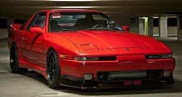
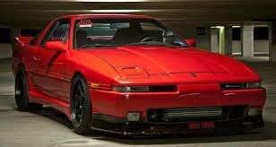

Toyota Supra Mk3
.jpg) 

The Toyota Supra MK3 is a beloved classic that continues to captivate car enthusiasts with its timeless design and performance capabilities.
The heart of the Supra MK3 is its engine. The 3.0-liter 7M-GTE turbocharged inline-six produced 230 horsepower and 240 lb-ft of torque, making it a powerful performer in its class. Paired with a rear-wheel-drive layout, the Supra MK3 offered a thrilling driving experience, whether on the road or the track.
The design of the Supra MK3 is both functional and stylish, featuring sleek lines, pop-up headlights, and a wide stance that give it an aggressive yet timeless look. Inside, the Supra MK3 was designed with the driver in mind, offering a comfortable and well-equipped interior that included features like climate control and an advanced audio system for its time.
Pre-launch Concept Car

Whenever talk turns to the legendary Toyota Supra, it's a good bet that the 1993-1998 Mk4 Supra is the car mentioned first. The combination of its Fast and Furious stardom and its powerful, over-engineered 2JZ engine made the Mk4 the king of the tuner world for decades. But when the Mk4's resale prices became untouchable for many, aspiring JDM hotrodders started to turn to the next best thing: the A70 Mk3 Toyota Supra.
Introduced in 1986, the third-generation Mk3 marked the first time Toyota officially made the Supra its own model. Compared to its predecessor, the Mk3 was fitted with a new rear-wheel-drive chassis, a sportier wedge design, and a bigger, more powerful six-cylinder engine. The A70 turned the Supra from an upgradable option package to a legitimate sports car. The following is a comprehensive list of everything you'd ever want to know about Toyota's other old school Supra.
{kind=link}